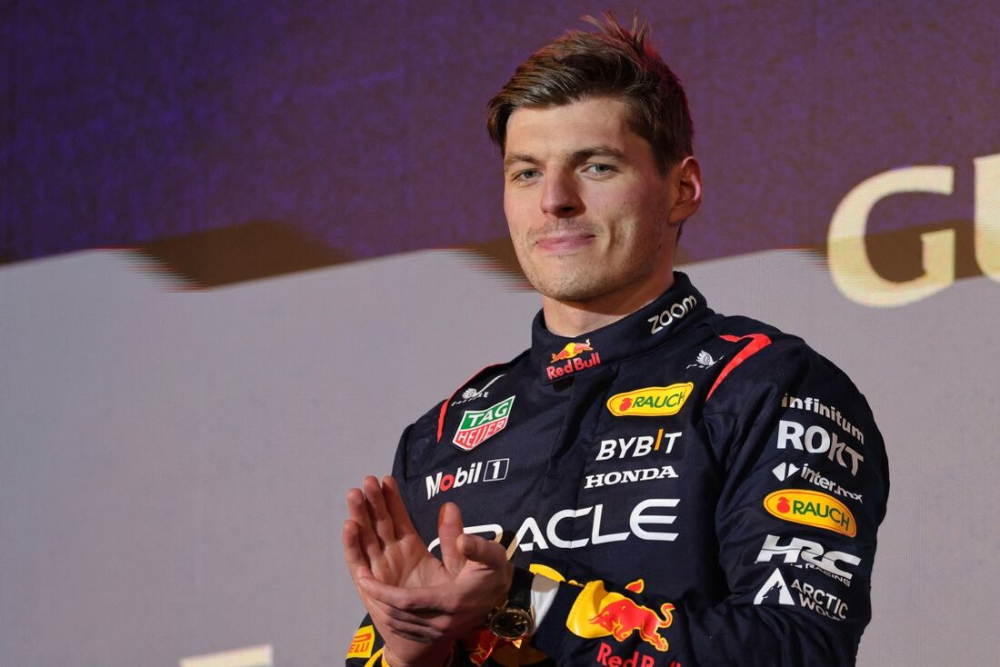
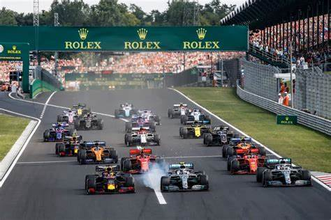
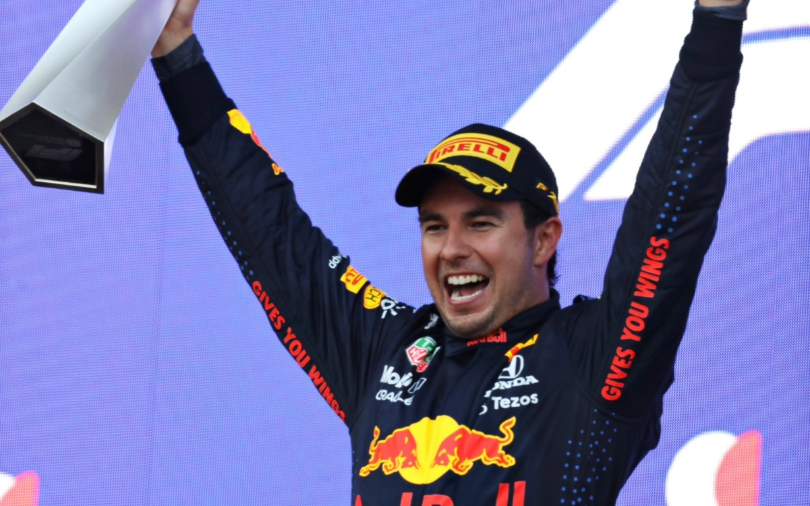

McLaren homenageará Senna com carro verde e amarelo no GP de Mônaco

Nos 30 anos da morte de Ayrton Senna, a McLaren terá uma grande homenagem ao ídolo brasileiro. A equipe inglesa deixará o laranja do carro de lado para receber as cores da bandeira do Brasil no Grande Prêmio de Mônaco, no próximo domingo.
Verstappen teve performances que vão ficar para carreira
Max Verstappen caminha para alcançar mais uma importante marca na F1. Caso lidere ao menos uma volta do GP de Mônaco deste final de semana, o holandês iguala Michael Schumacher na terceira posição de pilotos com mais provas consecutivas na liderança.
F1: Vencedor do GP do Canadá ganhará troféu criado por inteligência artificial
A Fórmula 1 chegou a um acordo com a AWS para poder aproveitar o poder de seus dados e oferecer uma nova experiência aos fãs durante as corridas. Desde 2018, costumam aparecer diferentes gráficos nas transmissões em que a empresa da Amazon fornece dados muito úteis para acompanhar as diferentes brigas no asfalto, e no GP do Canadá de 2024 eles darão um passo adiante.
Red Bull confirma renovação com Pérez por mais duas temporadas
A Red Bull anunciou nesta terça-feira (04) que Sergio Pérez permanecerá na equipe. A novidade já estava no ar há algumas semanas, mas foi oficializada hoje pelo time de Milton Keynes que apostou na continuidade do mexicano na Fórmula 1.